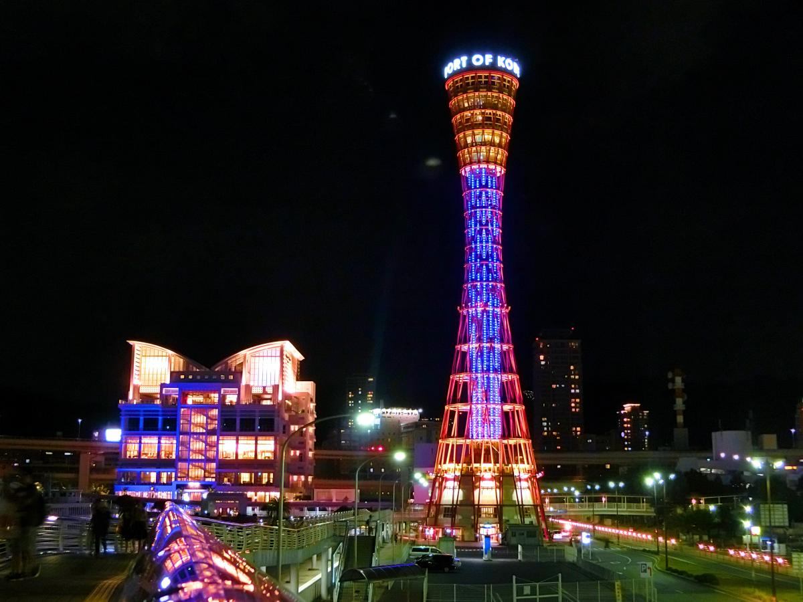
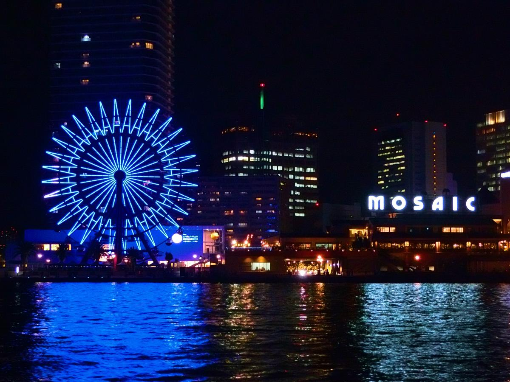

【神戸】2016年「世界人道デー」記念イベント閉幕
みんなでひとつのヒューマニティ
8月19日は、「世界人道デー」です。紛争や災害など世界の人道危機で苦しんでいる人々や現場で援助活動に携わる人々に心を寄せるため、国連総会によって定められました。今年のテーマは「みんなでひとつのヒューマニティ(One Humanity)」。この日、ニューヨークの国連本部で著名なアーティスト等を招いてイベントが行われたほか、戦闘が続くシリアでも映画上映会が催されるなど、世界30カ国以上で記念イベントが行われました。
.jpg)
神戸でのイベント開催は、今年で4回目となります。8月19日に国際協力機構（JICA）と共催した記念イベントに加え、写真展とライトアップという2つのサイドイベントも開催しました。また、三ノ宮駅前のミントビジョンを通じて、広く事前告知も行いました。
.jpg)
シリア難民の日常を紹介する写真展「シリアの食卓 Syrian Families at Tables」では、田邑恵子さんによるギャラリートークも開催され、イベントに訪れた多くの方々が熱心に耳を傾けていました。
また神戸市等のご協力により、ポートタワーやフラワーロードなど5つのランドマークが国連ブルーにライトアップされました。モザイク大観覧車で「WORLD HUMANITARIAN DAY 2016」の文字がくっきりと浮かび上がったほか、今年はさらに世界最長の吊橋、「明石海峡大橋」にもご協力頂きました。
.jpg)
他方、メインの記念イベントには、関西地区の学生さんなど、100名を超える方々にご参加頂き、会場は終始熱気に包まれていました。
.jpg)
潘 基文（パン・ギムン）国連事務総長からのビデオメッセージに続き、OCHA神戸事務所長の渡部正樹が開会の挨拶をしました。そして5月に開催された「世界人道サミット」に触れ、今年の「世界人道デー」のテーマ「みんなでひとつのヒューマニティ」が意味することを一緒に考えようと呼びかけました。
.jpg)
第1部では、外務省緊急・人道支援課長の廣田司さんより、世界の人道危機に対する日本の取組みについて発表頂きました。国際緊急援助隊の派遣や物資供与のような二国間の支援だけでなく、国連やNGOなどを通じた支援も紹介。また、東日本大震災や熊本地震で日本も海外からの支援の受け手になった点に触れ、「人道支援は我々の身近にあることを知ってほしい」と訴えました。（発表資料はこちら）
.jpg)
第2部では、アジアプレスのジャーナリスト・玉本英子さんが、イラクのヤズディ教徒の女性たちの厳しい現実を、取材映像をもとに伝えて下さいました。異教徒であるという理由で、激しい弾圧や暴力に晒され、避難生活を余儀なくされた人々。あどけなさが残る若い女性が語った体験談は痛ましく、参加者の方々も熱心に聞き入っていました。（参考サイト）
.jpg)
第3部は、JICA研究所の主任研究員・武藤亜子さんが、ヨルダンやトルコなどでのシリア難民に対するJICAの支援を紹介されました。シリアやヨルダンでの経験談やその時の写真も交え、難民受入国の負担軽減にも貢献できるような支援を継続していきたいと語られました。（発表資料の抜粋はこちら）
.jpg)
第4部では、世界保健機関(WHO)神戸センターのテクニカルオフィサー、茅野龍馬さんが登壇。世界的な健康危機につながるエボラ出血熱やジカ熱等、感染症の拡大についてお話頂きました。グローバル化が進む中、G7伊勢志摩サミットでも、こうした感染症のコントロールがますます大きな課題として取り上げられたとのことでした。
.jpg)
そして第5部では、これまでの登壇者全員に、シリア難民支援に携わった元青年海外協力隊員・加朱将也さんも加わって、「自分たちに何ができるのか」という問いかけについてパネルディスカッションを行いました。また会場からの「シリアの人々を好きになったエピソードを聞かせて欲しい」という質問には、内戦勃発後、JICAシリア事務所の全職員が国外退去することになった際の体験を武藤さんが紹介。シリアでは前払いする慣習の家賃の返還を現地の大家に求めたところ、殆どすべての職員が払い戻されたとのことでした。自分たちの方がはるかに大変な状況でも、相手を思いやるシリアの人々の誠実さには、会場からも感嘆の声が上がりました。この他世界各地で続く紛争の原因や解決策、あるいは日本の難民受入政策など多くの質問が寄せられました。
.jpg)
最後に、JICA関西の大西靖典所長が閉会の挨拶をされ、JICAイラク事務所長からのビデオメッセージを紹介して頂きました。イラクでは今も人口の1割相当の人々が国内避難民となっていますが、水、電力、保健医療、農業支援など社会基盤の整備や人材育成の支援を続けていくとのメッセージでした。
そしてイベントの締めくくりに、参加者全員で特製うちわを用いて、記念撮影を行いました。参加者アンケートでも、「知らないことばかりだったので、勉強になった」、「体験に基づいた話に心を打たれた」、「もっと聞きたかった」など、数多くのご意見が寄せられました。皆さん、ご参加ありがとうございました。

OCHA本部ウェブストーリー（英語)>>